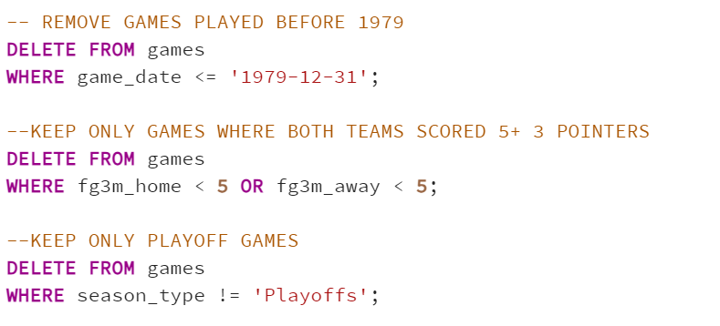
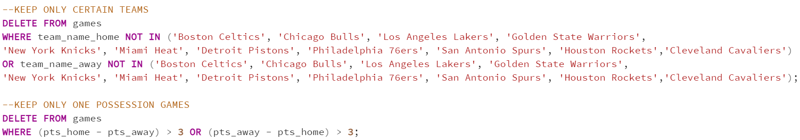
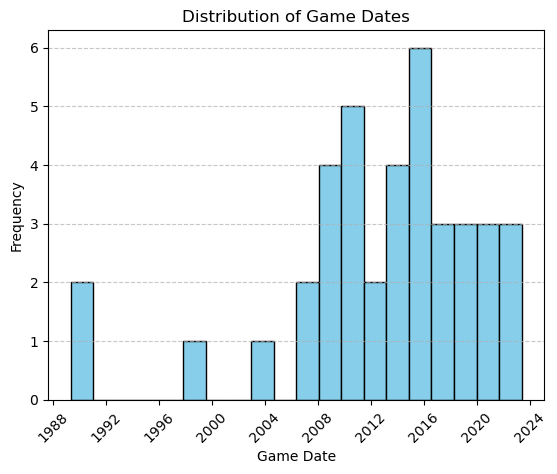

After getting the dataset into PgAdmin4, I started cleaning it up using some basic SQL tricks. First, I made sure there weren't any repeated entries in the dataset. Then, I got rid of any rows that were missing important info, like dates or scores.
Since the dataset goes all the way back to the 1940s, there were quite a few spots where the data was just missing. I decided to get rid of any rows that didn't have a date or had something like 'NA' instead of real data.
Next, I decided to focus on more recent games. In 1979, the NBA introduced the three-pointer, which really changed the game and made it more exciting. So, I decided to only keep games from 1979 onwards because I wanted to make sure all the games included that new three-point shot.
Then, I wanted to make sure the games I was looking at were really thrilling to watch. I figured a game with lots of three-point shots would be pretty exciting, so I only kept games where both teams scored at least five three-pointers. That way, I knew I was looking at some pretty action-packed games.
Lastly, I narrowed it down even further by only keeping playoff games. Playoff games are where the stakes are really high, and there's usually a lot of drama and excitement. I figured if I wanted to find the absolute best games, I should focus on the ones with the most on the line.

To delve deeper into our analysis and truly unearth the cream of the crop, we needed to sift through teams with a profound legacy in NBA history. We identified certain teams with storied franchises, rich with iconic moments and illustrious achievements. These teams include the Celtics, Bulls, Lakers, Warriors, Knicks, Heat, Pistons, Spurs, 76ers, Rockets and Cavaliers. Renowned for their extensive trophy cabinets and enduring presence in the league, these franchises embody the essence of NBA greatness.
By focusing on games involving these powerhouse teams, we aimed to capture the essence of basketball excellence and historical significance. These teams boast a wealth of iconic players and legendary rivalries, ensuring that each game featuring them carries a weighty significance in the annals of NBA lore.
Furthermore, we refined our selection criteria by exclusively retaining games that concluded with a margin of one possession. This stringent criterion ensured that each game was tightly contested, with the outcome hanging in the balance until the final buzzer. By emphasizing close finishes, we sought to curate a collection of games teeming with tension, drama, and exhilarating climaxes, providing viewers with an electrifying and unforgettable experience.

The histogram illustrates the distribution of game dates for the top 40 greatest NBA games in history. One striking observation is the concentration of games in more recent years, indicating the evolution and growth of the game over time. This trend reflects the advancements in player skills, strategic innovations, and the increasing competitiveness of teams in modern basketball.
Notably, the period between 2008 and 2016 emerges as a 'golden age' of basketball, marked by a plethora of iconic players such as LeBron James, Kobe Bryant, Steph Curry, and Kevin Durant. These legendary athletes not only showcased exceptional talent but also contributed to some of the most memorable moments in NBA history.
Interestingly, the visual also highlights a relative scarcity of games from the late 1990s and early 2000s. This era, characterized by intense defensive battles and lower-scoring affairs, lacked the offensive firepower and excitement seen in more recent NBA matchups. However, in the contemporary NBA landscape, offense has taken center stage, resulting in faster-paced and more entertaining games for fans worldwide.
